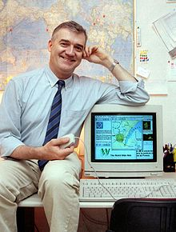

|
Robert Cailliau (born 26 January 1947) is a Belgian informatics engineer and computer scientist. Cailliau helped Tim Berners-Lee develop the World Wide Web.
BiographyCailliau was born in Tongeren, Belgium. In 1958 he moved with his parents to Antwerp. After secondary school he graduated from Ghent University in 1969 as civil engineer in electrical and mechanical engineering (Dutch: Burgerlijk Werktuigkundig en Elektrotechnisch ingenieur). He also has an MSc from the University of Michigan in Computer, Information and Control Engineering, 1971. During his military service in the Belgian Army he maintained Fortran programs to simulate troop movements. In December 1974 he started working at CERN as a Fellow in the Proton Synchrotron (PS) division, working on the control system of the accelerator. In April 1987 he left the PS division to become group leader of Office Computing Systems in the Data Handling division. In 1989, Tim Berners-Lee proposed a hypertext system for access to the many forms of documentation at and related to CERN. Berners-Lee created the system, calling it World Wide Web, between September and December 1990. During this time, Cailliau and he co-authored a proposal for funding for the project. Cailliau later became a key proponent of the project and developed with Nicola Pellow the first web browser for the Mac OS operating system called MacWWW. |

Robert Cailliau with an Apple Macintosh computer running his pioneering web browser, MacWWW Photo CERN Born 26 January 1947 (age 68) Tongeren, Belgium
Alma mater Ghent University University of Michigan
Website www.robertcailliau.eu
|
|
In 1993, in collaboration with the Fraunhofer Gesellschaft Cailliau started the European Commission's first web-based project for information dissemination in Europe (WISE). As a result of his work with CERN's Legal Service, CERN released the web technology into the public domain on 30 April 1993. In December 1993 Cailliau called for the first International WWW Conference which was held at CERN in May 1994. The oversubscribed conference brought together 380 web pioneers and was a milestone in the development of the web. The conference led to the forming of the International World Wide Web Conferences Steering Committee which has organized an annual conference since then. Cailliau was a member of the Committee from 1994 until 2002. |
WWW's historical logo designed by Robert Cailliau |
In 1994 Cailliau started the "Web for Schools" project with the European Commission, introducing the web as a resource for education. After helping to transfer the web development from CERN to the World Wide Web Consortium (W3C), he devoted his time to public communication. He went on early retirement from CERN in January 2007.
Cailliau is now an active member of Newropeans, a pan-European political movement for which he and Luca Cominassi have recently drafted a proposal concerning the European information society.
He is a public speaker on the past and future of the World Wide Web and delivered the keynote opening speech at the annual Runtime Revolution developer conference in Edinburgh, Scotland on September 1, 2009.
Awards
- 1995: ACM Software System Award (with Tim Berners-Lee)
- 1999: Christophe Plantin Prize, Antwerp
- 1999: Dr. Hon. Southern Cross University
- 2000: Dr. Hon. University of Ghent
- 2001: Médaille Genève Reconnaissante (with Tim Berners-Lee)
- 2004: Commander in the Order of King Leopold (awarded by King Albert II of Belgium)
- 2006: Honorary citizenship of the city of Tongeren
- 2008: Gold Medal of the Flemish Academy of Sciences and the Arts
- 2009: Dr. Hon. University of Liège (with Tim Berners-Lee)
- 2010: Ehrenpreis Best of Swiss Web
- 2012: Internet Hall of Fame by the Internet Society